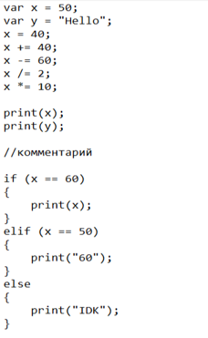
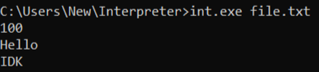
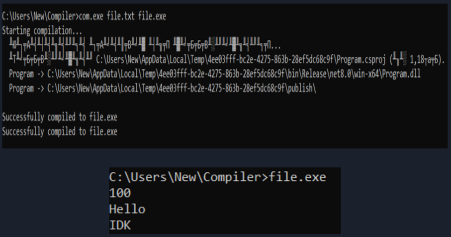

Введение
Компиляторы и интерпретаторы являются фундаментальными компонентами современных вычислительных систем, обеспечивающими преобразование программного кода в исполняемые инструкции.
Компилятор транслирует исходный код в машинный или промежуточный язык, создавая автономный исполняемый файл. Интерпретатор выполняет код построчно, динамически обрабатывая каждую команду.
Исследование принципов функционирования компиляторов и интерпретаторов на примере разработки собственных реализаций этих инструментов.
Активное развитие JIT-компиляции, многопроходной оптимизации и промежуточных представлений (LLVM) делает понимание внутренних механизмов критически важным.
Задачи проекта
- Изучить теоретические основы лексического, синтаксического и семантического анализа
- Разработать лексер и парсер для построения AST
- Реализовать интерпретатор для выполнения программ на основе AST
- Создать компилятор, транслирующий исходный код в C#
- Проанализировать преимущества и недостатки обоих подходов
Теоретические аспекты
Терминология
Компилятор — программная система, преобразующая исходный код на языке высокого уровня в эквивалентный код более низкого уровня. Вся работа выполняется до запуска программы.
Интерпретатор — выполняет исходный код непосредственно, без предварительного преобразования. Процесс выполнения чередуется с анализом очередных участков кода.
JIT-компиляция — гибридный подход, сочетающий компиляцию участков кода непосредственно во время выполнения программы.
Историческая эволюция
Первый компилятор для языка Фортран — группа Джона Бэкуса в IBM. Первая демонстрация автоматического преобразования формул в машинный код.
Язык LISP (Джон Маккарти) — первый интерпретатор, где программы могли анализироваться и модифицироваться другими программами.
Язык Алгол — разработаны методы синтаксического анализа, ставшие основой последующих компиляторов.
Yacc (Стивен Джонсон) — первая система автоматической генерации компиляторов. Виртуальная машина P-код для Pascal.
JVM (Java Virtual Machine) — успешное сочетание интерпретации байт-кода с JIT-компиляцией, обеспечившее переносимость и высокую производительность.
Архитектура интерпретатора
Интерпретатор — это программа, которая выполняет исходный код программы построчно без предварительного преобразования в машинный код.
Архитектура компилятора
Компилятор — это программа, которая преобразует исходный код, написанный на языке высокого уровня, в машинный код (или промежуточный код), который может выполнять компьютер.
Абстрактное синтаксическое дерево (AST)
AST — ключевая структура данных, отражающая иерархию конструкций программы. Оба компонента системы (компилятор и интерпретатор) используют единую кодовую базу для работы с AST.
Практическая реализация
Разработанная система включает два основных компонента с единой кодовой базой для обработки синтаксических конструкций.
Исходный код проектаПоддерживаемые конструкции языка
Разработанный язык поддерживает динамическую типизацию с двумя типами данных: числовые (double) и строковые (string).
var x = 10;
var name = "Hello";
// Составные операторы присваивания
x += 5;
x -= 3;
x *= 2;
x /= 8;
// Вывод данных
print(x);
print(name);
// Условные операторы
if (x > 10) {
print("больше десяти");
}
elif (x == 10) {
print("равно десяти");
}
else{
print("Неизвестно");
}
Пример кода в txt файле

Запуск интерпретатора
Интерпретатор запускается командой int.exe название_файла.txt и сразу выполняет код, выводя результат в консоль.

Запуск компилятора
Компилятор запускается командой com.exe название_файла.txt название_файла.exe, генерирует исполняемый файл, который затем запускается отдельно.

Компоненты системы
- Полный анализ исходного кода
- Проверка типов и семантика
- Генерация исполняемого модуля
- Оптимизация на этапе компиляции
- Построчный анализ и выполнение
- Проверка типов во время выполнения
- Прямой обход AST
- Возможность изменять код на ходу
Сравнение с существующими решениями
| Характеристика | Данная система | CPython | GCC |
|---|---|---|---|
| Типизация | Динамическая | Динамическая | Статическая |
| Промежуточный код | Прямой обход AST | Байт-код | IR (GIMPLE) |
| Целевой язык | C# | CPython VM | Машинный код |
| Приведение типов | Нет | Частичное | Явное |
Сравнительный анализ
Тест производительности: вычисление суммы чисел от 1 до 1 000 000
Компилятор
Преимущества
- Высокая производительность
- Сложные оптимизации
- Раннее обнаружение ошибок
Недостатки
- Перекомпиляция при изменениях
- Менее гибкая отладка
Интерпретатор
Преимущества
- Быстрый запуск программ
- Интерактивная работа с кодом
- Гибкость при отладке
Недостатки
- Меньшая производительность
- Позднее обнаружение ошибок
Заключение
В ходе выполнения проекта были разработаны функционирующие компилятор и интерпретатор с поддержкой базовых языковых конструкций.
Решённые задачи
- Разработан лексический анализатор с поддержкой динамической типизации
- Реализован синтаксический анализатор методом рекурсивного спуска
- Создана система семантического анализа с проверкой типов
- Построен генератор кода для компилятора
- Разработан интерпретатор с пошаговым выполнением AST
- Чёткая модульная архитектура
- Поддержка динамической типизации
- Простота и понятность синтаксиса
- Возможность и компиляции, и интерпретации
- Отсутствие поддержки циклов и функций
- Примитивная система обработки ошибок
- Ограниченные возможности оптимизации
Практическое применение
Образование
Демонстрация всех этапов обработки кода — от лексического анализа до генерации исполняемого файла.
Разработка
Платформа для быстрого прототипирования алгоритмов и создания специализированных скриптов.
Список литературы
- Ахо А.В., Лам М.С., Сети Р., Ульман Д.Д. Компиляторы: принципы, технологии и инструменты. — М.: Вильямс, 2018.
- Грис Д. Конструирование компиляторов. — М.: Мир, 1975.
- Аппель Э. Современная реализация компиляторов на С. — М.: Вильямс, 2002.
- Backus J. The History of FORTRAN I, II, and III // IEEE Annals of the History of Computing. — 1998.
- Naur P. et al. Report on the Algorithmic Language ALGOL 60 // Communications of the ACM. — 1960.
- Johnson S.C. Yacc: Yet Another Compiler-Compiler // Bell Laboratories, 1975.
- McCarthy J. Recursive Functions of Symbolic Expressions and Their Computation by Machine // Communications of the ACM. — 1960.
- Wirth N. The Design of a Pascal Compiler // Software: Practice and Experience. — 1971.
- Lindholm T. et al. The Java Virtual Machine Specification. — Addison-Wesley, 1999.
- Muchnick S.S. Advanced Compiler Design and Implementation. — Morgan Kaufmann, 1997.
- Lattner C., Adve V. LLVM: A Compilation Framework for Lifelong Program Analysis & Transformation // CGO'04.
- Burmako E. Scala Macros: Let Our Powers Combine! // Scala Symposium. — 2013.
- Aho A. The Structure of a Compiler. — Stanford University, 1986.